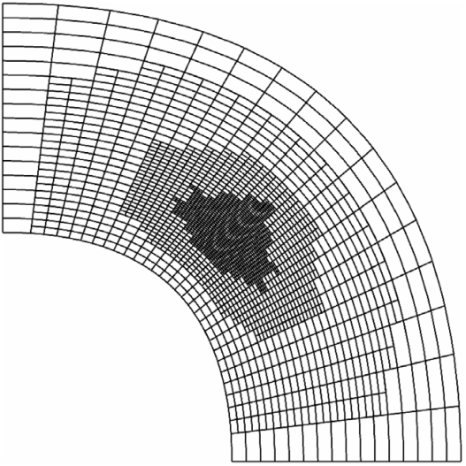

其他论文
|
Triangular Bézier Patch Based Parameterization via Quasi-conformal Mapping (in Chinese)
Shanshan Zhang, Maodong Pan, Falai Chen
Journal of Computer-Aided Design & Computer Graphics, 2023.
|
|  |
Efficient matrix assembly in isogeometric analysis with hierarchical B-splines
Maodong Pan*, Bert Jüttler, Angelos Mantzaflaris
Journal of Computational and Applied Mathematics, 390:113278, 2021.
|
|
Corner-Cutting Subdivision Surfaces of General Degrees with Parameters
Yufeng Tian, Maodong Pan
Journal of Computational Mathematics, 38(5):710-725, 2020.
中国数学会 T1 期刊
|
|
Feature Lines Extraction Algorithm on Meshes Based on ℓ0 Optimization (in Chinese)
Xiankang Yang, Maodong Pan, Weihua Tong
Computer Engineering, 45(7):251-257, 2019.
|
|
Recovery of sharp features in mesh models
Zhao Liu, Maodong Pan, Zhouwang Yang, Jiansong Deng
Communications in Mathematics and Statistics, 3(2):263-283, 2015.
中国数学会 T1 期刊
|
|